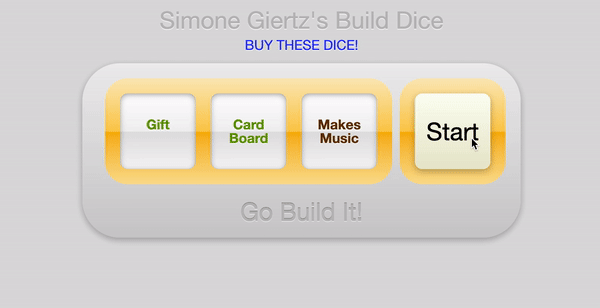

As a fervent developer with a deep-rooted passion for technology, I've honed my skills across various frameworks to create an array of web applications. My portfolio showcases projects built using Flask, Django, React.js, and Node.js, demonstrating my versatility and commitment to mastering different technologies. Additionally, I've delved into data analysis using R programming, further expanding my expertise.
Please note that some of the web applications in my portfolio might display an empty page or an error. This is likely due to Heroku suspending my account, as they have shifted towards requiring users to opt for paid hosting plans. While I understand the necessity of this change, I'm not wanting to continuously pay for hosting these projects. Nonetheless, my portfolio stands as a testament to my diverse skillset and dedication to the ever-evolving world of technology.
My first major social media web app holds a special place in my heart as it encompasses a wide range of features and applications. With great enthusiasm, I designed and implemented interactive components, such as a like button, comments section, user profiles, and the ability to create, update, and delete posts. The app also incorporates robust login and registration validations, ensuring a secure user experience. Furthermore, I've integrated a convenient password reset feature to enhance usability.
This project, hosted on a dedicated Linode server, has seen engagement from both friends and random individuals, sparking interesting interactions and content sharing. As my first significant venture into the world of social media web apps, it represents a personal milestone and a testament to my dedication and growth in the field. I kindly ask all users to be mindful and considerate when posting content on the platform.


This app is styled in the same way is my Flask-twitter remake. It has less functions since I did not add any javascript to this app. It is on heroku as well with its static files being stored on AWS S3 buckets.

A Skype like app made on django using agora.io. Hosted on Heroku

This "Simone-Giertz-s-Build-Dice" app is a simple web application that generates random project prompts for users seeking inspiration for their next DIY project. It consists of an HTML file for the web page structure, a CSS file for styling, and a JavaScript file for the main functionality. A guy on Mythbusters put up a video of these dice but he did not want to share every outcome of the dice since he wanted people to go buy them, so I carefully watched the video frame by frame to find the outcomes of each side.

This Django reddit like web application emulates a Reddit-like platform, offering a dynamic and user-friendly experience. It incorporates essential features such as authentication, authorization, post creation, upvoting/downvoting, commenting, sorting, searching, and notifications, while also supporting image and video uploads. The app is built using the latest Django framework, JavaScript, HTML, and CSS, and relies on PostgreSQL for efficient data management. The front-end design provides an engaging user interface, and the application is designed to be scalable and efficient, ensuring a seamless experience for its users.

This app serves as a lead manager, allowing users to add, edit, and delete leads with a name, email, and message. Users can also view the list of leads and their details. The code is structured with a clear separation of concerns between the backend and frontend, and the app provides a practical tool for users who want to manage leads effectively.

Two repositories work together to create a full-stack web application for a blog. The first repository, "DRF-backend-blog," contains the backend built using Django and the Django REST Framework, while the second repository, "DRF-fronted-ReactBlog," contains the frontend built using React.js. The backend manages the blog data and provides a RESTful API, while the frontend allows users to interact with the blog and communicates with the backend through the API.

This app serves as a booklist manager, allowing users to add books to a list with their title, author, and ISBN number. Users can also remove books from the list. the Booklist js app is a straightforward and practical web application that demonstrates proficiency in HTML, CSS, and JavaScript.
This app serves as a task tracker, allowing users to add, edit, and delete tasks with a title, day, and time. Users can also set reminders for tasks and toggle them on and off. This app provides a useful tool for users who want to manage their tasks efficiently.

My first project where I dip my toes into Flask creating a simple API for stocks. This app is running on heroku

This is my first major data analysis project titled "Bellabeat Capstone" where Bellabeat is a high-tech company that manufactures health-focused smart products. The data source used for my case study is FitBit Fitness Tracker Data. This dataset is stored in Kaggle and was made available through Mobius.

This project was implemented with a lot of javascript. Kind of played around with it. it is on heroku

A remake of a craigslist style webapp with comments and bidding. On heroku

I have other projects there along with code from completed courses.